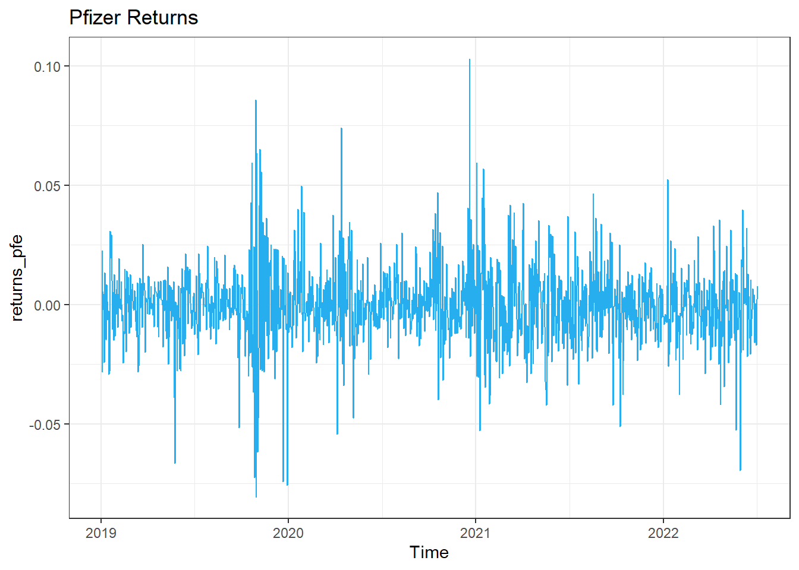
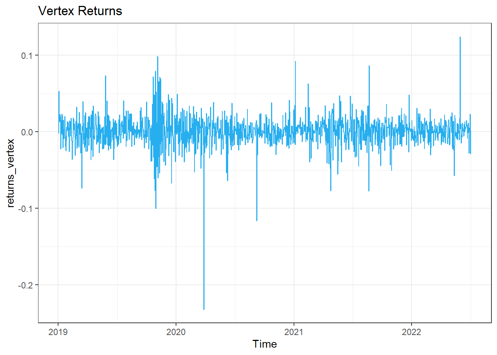
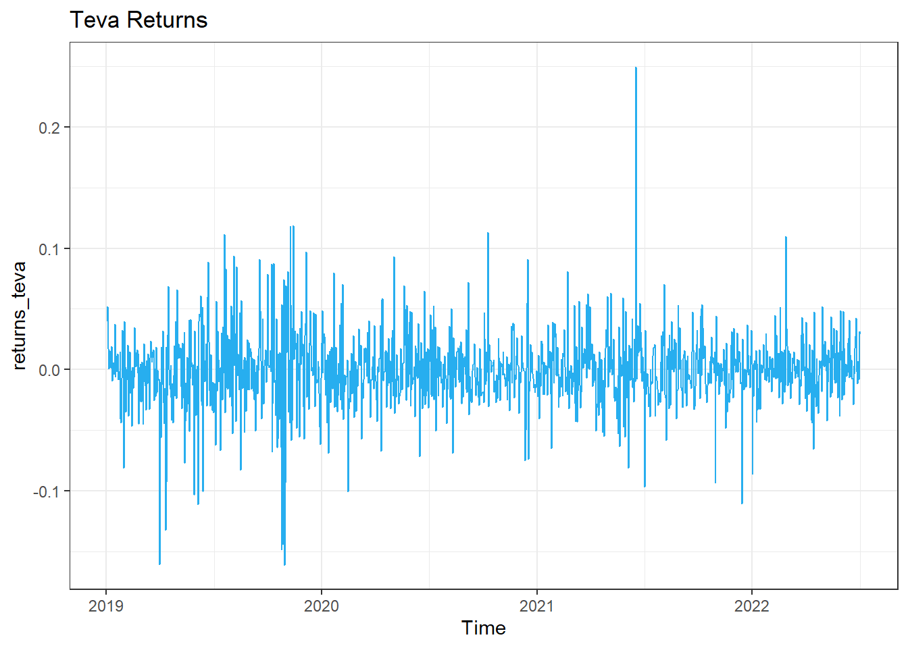
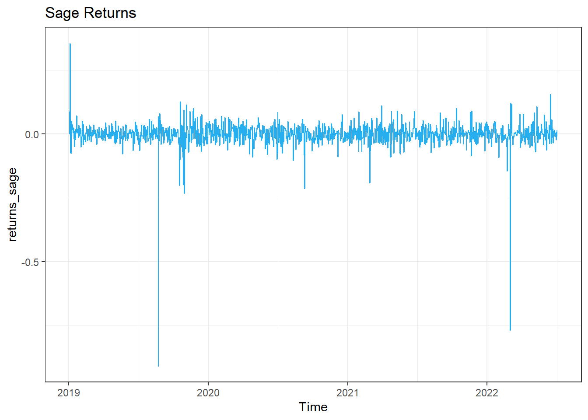
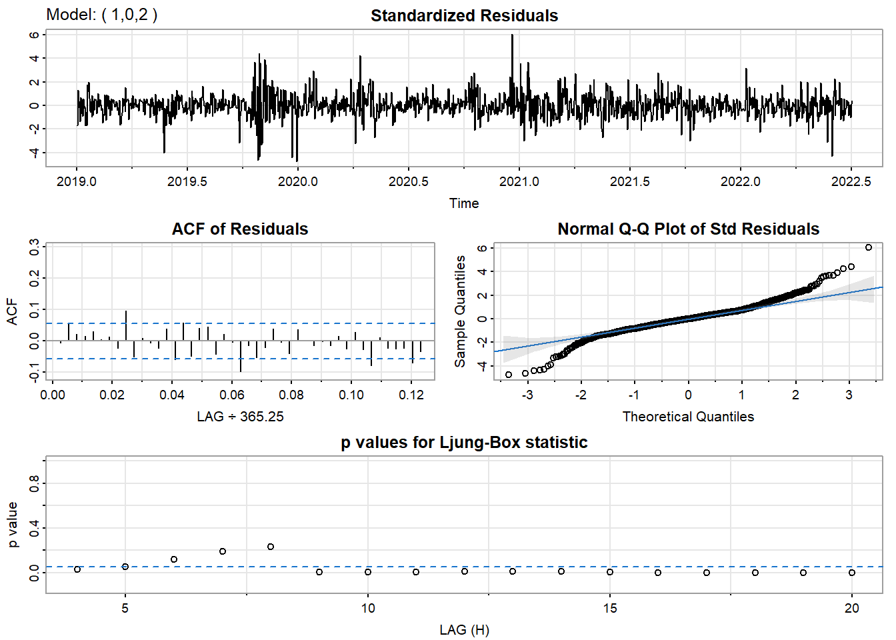
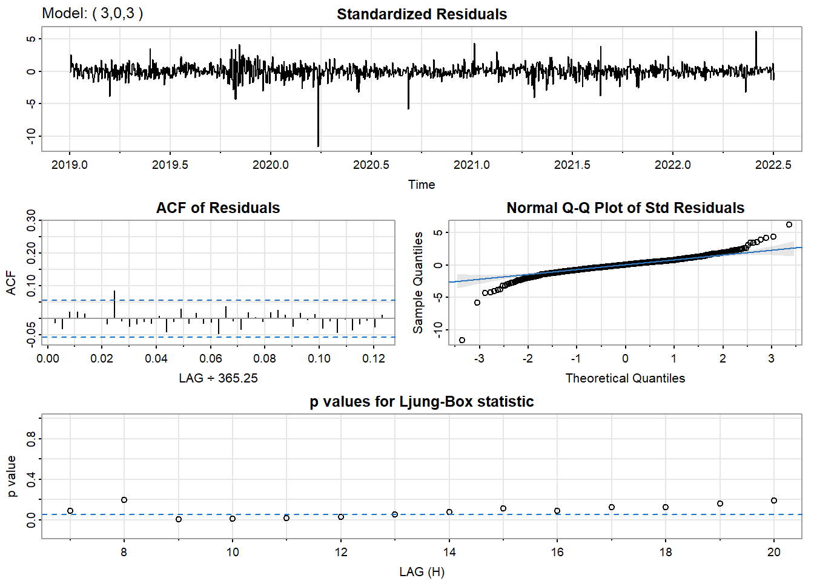
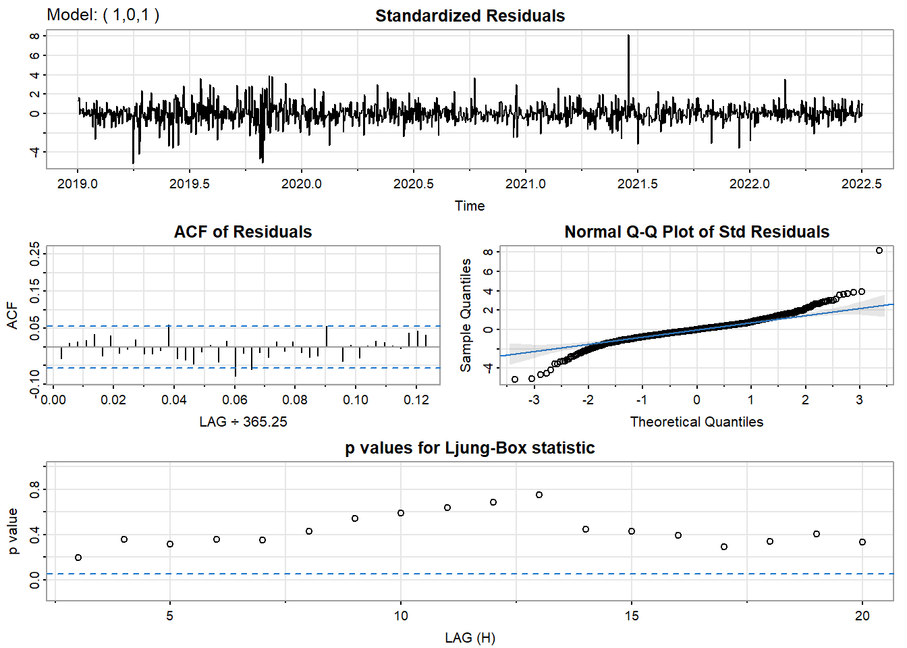
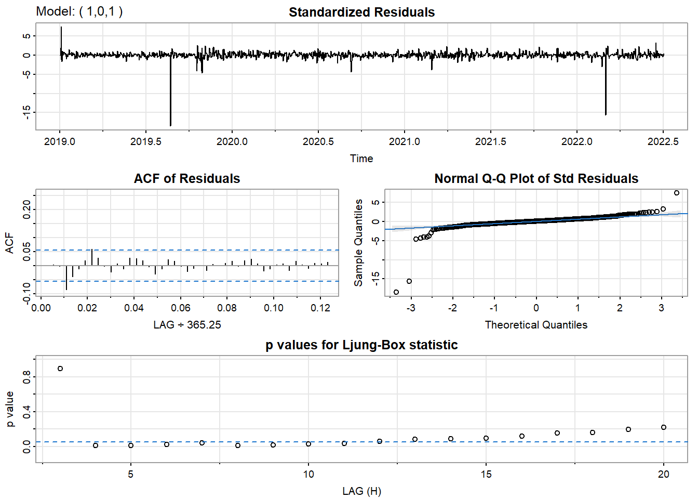

The ARCH model would allow us to model the volatility as a function of the size of previous time periods’ errors, capturing short-term fluctuations. In contrast, the GARCH model would incorporate both these shocks and the persistent volatility over time, which could provide a more comprehensive understanding of the volatility structure in these healthcare stocks.
The decision to use ARCH versus GARCH would depend on the characteristics of the stock’s return series—specifically, whether the volatility shocks are short-lived (suggesting ARCH) or whether they have a more enduring impact (suggesting GARCH). Before applying these models, it’s crucial for us to conduct preliminary analyses such as checking for stationarity, identifying the presence of volatility clustering, and determining the optimal lag length for the models.
Code
# Import Stock Price dataoptions("getSymbols.warning4.0"=FALSE)options("getSymbols.yahoo.warning"=FALSE)tickers =c("PFE", "VRTX", "TEVA", "SAGE")for (i in tickers){getSymbols(i,from ="2019-01-01",to ="2024-02-02")}x <-list(title ="date")y <-list(title ="value")stock <-data.frame(PFE$PFE.Adjusted, VRTX$VRTX.Adjusted, TEVA$TEVA.Adjusted, SAGE$SAGE.Adjusted)stock <-data.frame(stock,rownames(stock))colnames(stock) <-append(tickers,'Dates')stock <- stock %>%rownames_to_column(var ="date")stock$date<-as.Date(stock$Dates,"%Y-%m-%d")# Extract every stock pricepfizer <-getSymbols("PFE", from ="2019-01-01", to ="2024-02-02", src ="yahoo", auto.assign =FALSE)vertex <-getSymbols("VRTX", from ="2019-01-01", to ="2024-02-02", src ="yahoo", auto.assign =FALSE)teva <-getSymbols("TEVA", from ="2019-01-01", to ="2024-02-02", src ="yahoo", auto.assign =FALSE)sage <-getSymbols("SAGE", from ="2019-01-01", to ="2024-02-02", src ="yahoo", auto.assign =FALSE)
For Pfizer’s stock price from January 2019 to February 2024. There were fluctuations during 2020, but an overall increase trend can be observed, which is due to the COVID-19 pandemic and the development of the COVID-19 vaccine. However, for recent years, the stock price has been decreasing with some fluctuations.
For Vertex Pharmaceuticals’ stock price from January 2019 to February 2024, the stock price has been decreasing in the beginning of 2020, but it has been increasing significantly since March 2022, with some fluctuations. The significant increase in Vertex stock price could be attributed to several factors: Successful Drug Developments, Strategic Partnerships or Acquisitions with other companies for drug development or expansion into new markets, and Breakthroughs in biotechnology or patents for new drug formulas.
For TEVA stock price from January 2019 to February 2024. The stock price has been decreasing hugely since 2019, reaching its lowest point in 2020. Since then, the stock price has been relatively stable with fluctuations.
For Sage Therapeutics’ stock price from January 2019 to February 2024, the stock price has been decreasing since the middle of 2019 too, with some fluctuations. Then it has been increasing, reaching the peak in 2021, and then decreasing a little again, then stay stable with some fluctuations.
pfe_ts <-ts(pfizer$PFE.Adjusted, start=decimal_date(as.Date("2019-01-01")), frequency =365.25)returns_pfe =log(pfe_ts) %>%diff()# Plot the PFE returnsautoplot(returns_pfe, color="#27aeef") +theme_bw() +ggtitle("Pfizer Returns")

The returns of Pfizer stock price shows clear volatility clustering. The returns are centered around zero, with some extreme values indicating high volatility. The periods of high volatility are around the beginning of 2020 and 2021, which could be due to the COVID-19 pandemic and the development of the COVID-19 vaccine.
Code
vertex_ts <-ts(vertex$VRTX.Adjusted, start=decimal_date(as.Date("2019-01-01")), frequency =365.25)returns_vertex =log(vertex_ts) %>%diff()# Plot the VRTX returnsautoplot(returns_vertex, color="#27aeef") +theme_bw() +ggtitle("Vertex Returns")

The returns of Vertex stock price are centered around zero, with some extreme values indicating high volatility. The periods of high volatility are in the end of 2019, the middle of 2020, and the middle of 2022, which could be due to the company’s financial performance, drug developments, or COVID-19 pandemic.
Code
teva_ts <-ts(teva$TEVA.Adjusted, start=decimal_date(as.Date("2019-01-01")), frequency =365.25)returns_teva =log(teva_ts) %>%diff()# Plot the TEVA returnsautoplot(returns_teva, color="#27aeef") +theme_bw() +ggtitle("Teva Returns")

The returns of TEVA stock price shows clear volatility clustering. The returns are centered around zero, with some extreme values indicating high volatility. The periods of high volatility are around the end of 2019, and there was a high spike in the middle of 2021, which could be due to the company’s financial performance, drug developments, or COVID-19 pandemic.
Code
sage_ts <-ts(sage$SAGE.Adjusted, start=decimal_date(as.Date("2019-01-01")), frequency =365.25)returns_sage =log(sage_ts) %>%diff()# Plot the SAGE returnsautoplot(returns_sage, color="#27aeef") +theme_bw() +ggtitle("Sage Returns")

The Sage Therapeutics’ stock returns are fluctuating around zero, but two large negative spikes of the volatility stand out—one in late 2019 and another in early 2022. These could indicate significant stock price drops, possibly due to negative clinical trial results, regulatory setbacks, poor financial performance, or COVID-19. Between these events, returns show regular volatility, which is common in biotech stocks due to the high-impact nature of news on drug development progress.
After analyzing the ACF and PACF plots for Pfizer’s stock returns, we can see significant lags at p = 1, 9, 10, q = 1, 9, 10. This indicates that the returns are not stationary and exhibit significant autocorrelation at these lags. Besides, we can see the returns of Pfizer are most stationary without high correlation.
Here, I will check the ACF and PACF plots for the absolute returns of Pfizer’s stock price. We can see that the PACF plot shows significant lags at p = 1, 2, 3, 4, 5, 8, and the ACF plot shows significant lags at q = 1 to 10 and so on.
Then, let’s check the ACF and PACF plots for the squared returns of Pfizer’s stock price. We can see that the PACF plot shows significant lags at p = 1, 2, 3, 4, 5, 7, 8, and the ACF plot shows significant lags at q = 1 to 10 and so on.
After analyzing the ACF and PACF plots for Vertex’s stock returns, we can see significant lags at p = 1, 6, 7, 8, 9, q = 1, 6, 7, 8, 9. This indicates that the returns are not stationary and exhibit significant autocorrelation at these lags. Besides, we can see the returns of Vertex are most stationary without high correlation.
Here, I will check the ACF and PACF plots for the absolute returns of Vertex’s stock price. We can see that the PACF plot shows significant lags at p = 1, 2, 3, 4, 5, 6, 7, 9, and the ACF plot shows significant lags at q = 1 to 10 and so on.
Then, let’s check the ACF and PACF plots for the squared returns of Vertex’s stock price. We can see that the PACF plot shows significant lags at p = 1, and the ACF plot shows significant lags at q = 1, 7, 9.
After analyzing the ACF and PACF plots for TEVA’s stock returns, we can see significant lags at p = 14, q = 14. This indicates that the returns are not stationary and exhibit significant autocorrelation at these lags. Besides, we can see the returns of TEVA are most stationary without high correlation.
Here, I will check the ACF and PACF plots for the absolute returns of Teva’s stock price. We can see that the PACF plot shows significant lags at p = 1, 2, 3, 4, 6, 7, and the ACF plot shows significant lags at q = 1 to 10 and so on.
Then, let’s check the ACF and PACF plots for the squared returns of Teva’s stock price. We can see that the PACF plot shows significant lags at p = 1, 2, 5, 10 and the ACF plot shows significant lags at q = 1, 2, 3, 4, 5, 10.
After analyzing the ACF and PACF plots for SAGE’s stock returns, we can see significant lags at p = 4, 8, q = 4, 8. This indicates that the returns are not stationary and exhibit significant autocorrelation at these lags. Besides, we can see the returns of SAGE are most stationary without high correlation.
Here, I will check the ACF and PACF plots for the absolute returns of Sage’s stock price. We can see that the PACF plot shows significant lags at p = 1, 4, and the ACF plot shows significant lags at q = 1, 4, 8.
Then, let’s check the ACF and PACF plots for the squared returns of Sage’s stock price. We can see that none of the lags are significant in the PACF plot and the ACF plot.
In this section, I’ll use the ARCH test to check for the presence of ARCH effects in the stock returns of Pfizer, Vertex, Teva, and Sage. The null hypothesis of the ARCH test is that there are no ARCH effects (the presence of heteroskedasticity or varying volatility) in the data. If the p-value is less than 0.05, then we can reject the null hypothesis and conclude that there are ARCH effects in the data. The ARCH test is often applied to financial market data where volatility clustering occurs—periods of high volatility are followed by high volatility, and periods of low volatility follow low volatility. The ARCH test evaluates whether past error terms can predict future variance, implying that the error terms have a pattern rather than being random. If the ARCH effect is present, models such as ARCH or GARCH might be suitable for capturing this characteristic in the data.
As we can see, the p-value of the ARCH test for Pfizer’s stock returns is less than 0.05, indicating that there are ARCH effects in the data. This suggests that the volatility of Pfizer’s stock returns is not constant and exhibits clustering behavior.
As we can see, the p-value of the ARCH test for Vertex’s stock returns is more than 0.05, indicating that there are not ARCH effects in the data. This suggests that the volatility of Vertex’s stock returns is constant and may not exhibit clustering behavior.
As we can see, the p-value of the ARCH test for Teva’s stock returns is less than 0.05, indicating that there are ARCH effects in the data. This suggests that the volatility of Teva’s stock returns is not constant and may exhibit clustering behavior.
As we can see, the p-value of the ARCH test for Sage’s stock returns is more than 0.05, indicating that there are no ARCH effects in the data. This suggests that the volatility of Sage’s stock returns is constant and may not exhibit clustering behavior.
Fitting the ARIMA Model
In this section, I’ll fit an ARIMA model on the returns firstly.
p d q AIC BIC AICc
12 3 0 3 -6839.576 -6798.345 -6839.463
Code
output[which.min(output$BIC),]
p d q AIC BIC AICc
2 1 0 2 -6832.033 -6806.264 -6831.986
Code
output[which.min(output$AICc),]
p d q AIC BIC AICc
12 3 0 3 -6839.576 -6798.345 -6839.463
As we can see, the best model according to BIC is ARIMA(1,0,2). This model’s AIC is quite close to the other two models, but the BIC is the lowest among the three. Considering the principle of parsimony, we’ll choose ARIMA(1,0,2) as the best model for Pfizer’s stock returns.
Series: returns_pfe
ARIMA(1,0,2) with non-zero mean
Coefficients:
ar1 ma1 ma2 mean
-0.8619 0.8208 -0.0850 -2e-04
s.e. 0.0494 0.0539 0.0272 4e-04
sigma^2 = 0.000279: log likelihood = 3421.02
AIC=-6832.03 AICc=-6831.99 BIC=-6806.26
Training set error measures:
ME RMSE MAE MPE MAPE MASE ACF1
Training set -1.440239e-06 0.01667706 0.0118512 NaN Inf 0.6645112 -0.005143767
After fitting ARIMA(1,0,2) to the data, we can see that there is one insignificant coefficient in the model on the 0.05 significance level, which is MA(1).
As we can see from the ACF and PACF plots before, the data is already mostly stationary, so it’s not necessary to difference the data.
Code
# p = 1:9, d = 0, q = 1:9ARIMA.c=function(p1,p2,q1,q2,data){temp=c()d=1i=1temp=data.frame()ls=matrix(rep(NA,6*15),nrow=15)for (p in p1:p2)#{for(q in q1:q2)# {for(d in0:0)# {if(p+d+q<=6) { model<-Arima(data,order=c(p,d,q)) ls[i,]=c(p,d,q,model$aic,model$bic,model$aicc) i=i+1 } } }}temp=as.data.frame(ls)names(temp)=c("p","d","q","AIC","BIC","AICc")temp}output <-ARIMA.c(1,9,1,9,data=returns_vertex)output
Series: returns_vertex
ARIMA(3,0,3) with non-zero mean
Coefficients:
ar1 ar2 ar3 ma1 ma2 ma3 mean
-0.8653 0.5634 0.8015 0.7552 -0.6125 -0.7704 7e-04
s.e. 0.5090 0.8625 0.4467 0.4731 0.7374 0.3561 4e-04
sigma^2 = 0.0003924: log likelihood = 3204.23
AIC=-6392.45 AICc=-6392.34 BIC=-6351.22
Training set error measures:
ME RMSE MAE MPE MAPE MASE
Training set 1.732898e-05 0.01975556 0.01366113 109.6771 183.909 0.6694657
ACF1
Training set -0.01221804
After fitting ARIMA(3,0,3) to the data, we can see that there is no significant coefficient in the model on the 0.05 significance level.
As we can see from the ACF and PACF plots before, the data is already mostly stationary, so it’s not necessary to difference the data.
Code
# p = 1:14, d = 0, q = 1:14ARIMA.c=function(p1,p2,q1,q2,data){temp=c()d=1i=1temp=data.frame()ls=matrix(rep(NA,6*20),nrow=20)for (p in p1:p2)#{for(q in q1:q2)# {for(d in0:0)# {if(p+d+q<=6) { model<-Arima(data,order=c(p,d,q)) ls[i,]=c(p,d,q,model$aic,model$bic,model$aicc) i=i+1 } } }}temp=as.data.frame(ls)names(temp)=c("p","d","q","AIC","BIC","AICc")temp}output <-ARIMA.c(1,14,1,14,data=returns_teva)output
p d q AIC BIC AICc
1 1 0 1 -5264.767 -5244.152 -5264.736
2 1 0 2 -5265.205 -5239.436 -5265.158
3 1 0 3 -5263.546 -5232.623 -5263.480
4 1 0 4 -5261.897 -5225.820 -5261.809
5 1 0 5 -5260.198 -5218.967 -5260.084
6 2 0 1 -5265.099 -5239.330 -5265.052
7 2 0 2 -5263.838 -5232.915 -5263.771
8 2 0 3 -5261.505 -5225.428 -5261.417
9 2 0 4 -5259.905 -5218.674 -5259.791
10 3 0 1 -5263.442 -5232.519 -5263.376
11 3 0 2 -5261.706 -5225.629 -5261.618
12 3 0 3 -5259.927 -5218.696 -5259.813
13 4 0 1 -5261.784 -5225.707 -5261.695
14 4 0 2 -5259.854 -5218.623 -5259.740
15 5 0 1 -5261.925 -5220.695 -5261.812
16 NA NA NA NA NA NA
17 NA NA NA NA NA NA
18 NA NA NA NA NA NA
19 NA NA NA NA NA NA
20 NA NA NA NA NA NA
Code
output[which.min(output$AIC),]
p d q AIC BIC AICc
2 1 0 2 -5265.205 -5239.436 -5265.158
Code
output[which.min(output$BIC),]
p d q AIC BIC AICc
1 1 0 1 -5264.767 -5244.152 -5264.736
Code
output[which.min(output$AICc),]
p d q AIC BIC AICc
2 1 0 2 -5265.205 -5239.436 -5265.158
As we can see, the best model according to BIC is ARIMA(1,0,1). This model’s AIC is quite close to the other two models, but the BIC is the lowest among the three. Considering the principle of parsimony, we’ll choose ARIMA(1,0,1) as the best model for Teva’s stock returns.
Series: returns_teva
ARIMA(1,0,1) with non-zero mean
Coefficients:
ar1 ma1 mean
0.8183 -0.7890 -2e-04
s.e. 0.0971 0.1027 1e-03
sigma^2 = 0.0009509: log likelihood = 2636.38
AIC=-5264.77 AICc=-5264.74 BIC=-5244.15
Training set error measures:
ME RMSE MAE MPE MAPE MASE ACF1
Training set -5.764348e-06 0.03080044 0.02156897 NaN Inf 0.6871996 -0.03170607
After fitting ARIMA(1,0,1) to the data, we can see that there is no significant coefficient in the model on the 0.05 significance level.
As we can see from the ACF and PACF plots before, the data is already mostly stationary, so it’s not necessary to difference the data.
Code
# p = 1:8, d = 0, q = 1:8ARIMA.c=function(p1,p2,q1,q2,data){temp=c()d=1i=1temp=data.frame()ls=matrix(rep(NA,6*15),nrow=15)for (p in p1:p2)#{for(q in q1:q2)# {for(d in0:0)# {if(p+d+q<=6) { model<-Arima(data,order=c(p,d,q)) ls[i,]=c(p,d,q,model$aic,model$bic,model$aicc) i=i+1 } } }}temp=as.data.frame(ls)names(temp)=c("p","d","q","AIC","BIC","AICc")temp}output <-ARIMA.c(1,8,1,8,data=returns_sage)output
p d q AIC BIC AICc
9 2 0 4 -4081.7 -4040.47 -4081.587
Code
output[which.min(output$BIC),]
p d q AIC BIC AICc
1 1 0 1 -4072.59 -4051.974 -4072.558
Code
output[which.min(output$AICc),]
p d q AIC BIC AICc
9 2 0 4 -4081.7 -4040.47 -4081.587
As we can see, the best model according to BIC is ARIMA(1,0,1). This model’s AIC is quite close to the other two models, but the BIC is the lowest among the three. Considering the principle of parsimony, we’ll choose ARIMA(1,0,1) as the best model for Sage’s stock returns.
Series: returns_sage
ARIMA(1,0,1) with non-zero mean
Coefficients:
ar1 ma1 mean
-0.1448 0.1064 -0.0010
s.e. 0.4693 0.4711 0.0013
sigma^2 = 0.002415: log likelihood = 2040.29
AIC=-4072.59 AICc=-4072.56 BIC=-4051.97
Training set error measures:
ME RMSE MAE MPE MAPE MASE
Training set -4.692071e-06 0.04908677 0.02653977 NaN Inf 0.6817242
ACF1
Training set 0.0002227219
After fitting ARIMA(1,0,1) to the data, we can see that there is no significant coefficient in the model on the 0.05 significance level.
initial value -4.088329
iter 2 value -4.088438
iter 3 value -4.090035
iter 4 value -4.090037
iter 5 value -4.090037
iter 6 value -4.090042
iter 7 value -4.090046
iter 8 value -4.090051
iter 9 value -4.090055
iter 10 value -4.090060
iter 11 value -4.090064
iter 12 value -4.090071
iter 13 value -4.090078
iter 14 value -4.090081
iter 15 value -4.090082
iter 16 value -4.090083
iter 17 value -4.090084
iter 18 value -4.090088
iter 19 value -4.090098
iter 20 value -4.090110
iter 21 value -4.090110
iter 22 value -4.090111
iter 23 value -4.090120
iter 24 value -4.090127
iter 25 value -4.090136
iter 26 value -4.090144
iter 27 value -4.090161
iter 28 value -4.090203
iter 29 value -4.090244
iter 30 value -4.090258
iter 31 value -4.090281
iter 32 value -4.090300
iter 33 value -4.090307
iter 34 value -4.090308
iter 35 value -4.090309
iter 36 value -4.090312
iter 37 value -4.090321
iter 38 value -4.090328
iter 39 value -4.090329
iter 40 value -4.090330
iter 41 value -4.090331
iter 42 value -4.090336
iter 43 value -4.090347
iter 44 value -4.090390
iter 45 value -4.090458
iter 46 value -4.090527
iter 47 value -4.090571
iter 48 value -4.090575
iter 49 value -4.090594
iter 50 value -4.090640
iter 51 value -4.090714
iter 52 value -4.090804
iter 53 value -4.090816
iter 54 value -4.090844
iter 55 value -4.090880
iter 56 value -4.091043
iter 57 value -4.091167
iter 58 value -4.091292
iter 59 value -4.091342
iter 60 value -4.091395
iter 61 value -4.091403
iter 62 value -4.091463
iter 63 value -4.091507
iter 64 value -4.091541
iter 65 value -4.091542
iter 66 value -4.091542
iter 66 value -4.091542
iter 66 value -4.091542
final value -4.091542
converged
initial value -4.092815
iter 2 value -4.092851
iter 3 value -4.092904
iter 4 value -4.093147
iter 5 value -4.093355
iter 6 value -4.093551
iter 7 value -4.093677
iter 8 value -4.093690
iter 9 value -4.093694
iter 10 value -4.093695
iter 11 value -4.093695
iter 12 value -4.093696
iter 13 value -4.093697
iter 13 value -4.093697
iter 13 value -4.093697
final value -4.093697
converged
<><><><><><><><><><><><><><>
Coefficients:
Estimate SE t.value p.value
ar1 -0.8619 0.0494 -17.4476 0.0000
ma1 0.8208 0.0539 15.2260 0.0000
ma2 -0.0850 0.0272 -3.1296 0.0018
xmean -0.0002 0.0004 -0.3608 0.7183
sigma^2 estimated as 0.0002781243 on 1275 degrees of freedom
AIC = -5.341699 AICc = -5.341674 BIC = -5.321551

Code
pfe.res<-fit_pfe$residuals
As we can see from the Standardized Residuals plot, there are still volatility clustering around the end of 2019, and 2021. The ACF plot for the residuals shows that the residuals are mostly random, implying that the model has captured the serial correlation in the data effectively. The Quantile-Quantile (Q-Q) plot suggests the residuals are approximately normally distributed. And the Ljung-Box plot shows that some of the p-values are above the 0.05 significance level, which is a good sign.
After examining the ACF and PACF plots of the residuals and squared residuals, we can see that there are still some correlations at lag 1,2,3,4,5 and so on, which means that the model is not capturing all the information in the data. Fitting a GARCH model might help us capture other correlations.
Code
sarima(returns_vertex, 3,0,3)
initial value -3.899871
iter 2 value -3.908685
iter 3 value -3.912691
iter 4 value -3.913050
iter 5 value -3.913227
iter 6 value -3.913252
iter 7 value -3.913474
iter 8 value -3.913605
iter 9 value -3.913669
iter 10 value -3.913687
iter 11 value -3.913717
iter 12 value -3.913779
iter 13 value -3.913868
iter 14 value -3.913967
iter 15 value -3.914071
iter 16 value -3.914246
iter 17 value -3.914296
iter 18 value -3.914441
iter 19 value -3.914578
iter 20 value -3.914626
iter 21 value -3.914682
iter 22 value -3.914694
iter 23 value -3.914709
iter 24 value -3.914749
iter 25 value -3.914823
iter 26 value -3.914923
iter 27 value -3.915093
iter 28 value -3.916724
iter 29 value -3.916990
iter 30 value -3.917331
iter 31 value -3.917471
iter 32 value -3.918120
iter 33 value -3.918294
iter 34 value -3.918946
iter 35 value -3.919466
iter 36 value -3.921044
iter 37 value -3.921841
iter 38 value -3.922949
iter 39 value -3.923054
iter 40 value -3.923703
iter 41 value -3.923992
iter 42 value -3.924503
iter 43 value -3.924709
iter 44 value -3.924723
iter 45 value -3.924752
iter 46 value -3.924929
iter 47 value -3.924985
iter 48 value -3.925061
iter 49 value -3.925116
iter 50 value -3.925198
iter 51 value -3.925209
iter 52 value -3.925213
iter 53 value -3.925217
iter 54 value -3.925221
iter 55 value -3.925222
iter 56 value -3.925223
iter 57 value -3.925223
iter 58 value -3.925224
iter 58 value -3.925224
final value -3.925224
converged
initial value -3.923553
iter 2 value -3.923572
iter 3 value -3.923621
iter 4 value -3.923700
iter 5 value -3.923788
iter 6 value -3.923838
iter 7 value -3.923910
iter 8 value -3.923997
iter 9 value -3.924084
iter 10 value -3.924140
iter 11 value -3.924167
iter 12 value -3.924182
iter 13 value -3.924194
iter 14 value -3.924197
iter 15 value -3.924198
iter 15 value -3.924198
iter 15 value -3.924198
final value -3.924198
converged
<><><><><><><><><><><><><><>
Coefficients:
Estimate SE t.value p.value
ar1 -0.8653 0.5090 -1.7001 0.0894
ar2 0.5634 0.8625 0.6533 0.5137
ar3 0.8015 0.4467 1.7942 0.0730
ma1 0.7552 0.4731 1.5962 0.1107
ma2 -0.6125 0.7374 -0.8307 0.4063
ma3 -0.7704 0.3561 -2.1636 0.0307
xmean 0.0007 0.0004 1.7767 0.0759
sigma^2 estimated as 0.0003902822 on 1272 degrees of freedom
AIC = -4.998008 AICc = -4.997939 BIC = -4.965772

Code
vertex.res<-fit_vertex$residuals
As we can see from the Standardized Residuals plot, the flat, relatively constant line without patterns or structures suggests that the model has captured the time series data’s dynamics reasonably well. There’s no apparent volatility clustering or obvious trends remaining, which is a good sign. The ACF plot for the residuals shows that the residuals are mostly random, implying that the model has captured the serial correlation in the data effectively. The Quantile-Quantile (Q-Q) plot suggests the residuals are approximately normally distributed. And the Ljung-Box plot shows that many of the p-values are above the 0.05 significance level, which is a good sign.
As we can see from the Standardized Residuals plot, and the ACF and PACF plots of the residuals and squared residuals, there’s no need to fit a GARCH model to the residuals. The residuals are approximately normally distributed, and there’s no significant autocorrelation in the residuals, which aligns with the conclusion we got from the ARCH test.
Code
sarima(returns_teva, 1,0,1)
initial value -3.479201
iter 2 value -3.479203
iter 3 value -3.479462
iter 4 value -3.479578
iter 5 value -3.479633
iter 6 value -3.479801
iter 7 value -3.480049
iter 8 value -3.480054
iter 9 value -3.480059
iter 10 value -3.480374
iter 11 value -3.480864
iter 12 value -3.480938
iter 13 value -3.480945
iter 14 value -3.481047
iter 15 value -3.481086
iter 16 value -3.481122
iter 17 value -3.481177
iter 18 value -3.481486
iter 19 value -3.481510
iter 20 value -3.481512
iter 21 value -3.481512
iter 22 value -3.481514
iter 23 value -3.481514
iter 23 value -3.481514
iter 23 value -3.481514
final value -3.481514
converged
initial value -3.480199
iter 2 value -3.480206
iter 3 value -3.480209
iter 4 value -3.480210
iter 5 value -3.480215
iter 6 value -3.480218
iter 7 value -3.480219
iter 8 value -3.480219
iter 9 value -3.480219
iter 10 value -3.480222
iter 11 value -3.480222
iter 12 value -3.480222
iter 13 value -3.480223
iter 14 value -3.480223
iter 15 value -3.480224
iter 15 value -3.480224
final value -3.480224
converged
<><><><><><><><><><><><><><>
Coefficients:
Estimate SE t.value p.value
ar1 0.8183 0.0971 8.4294 0.0000
ma1 -0.7890 0.1027 -7.6792 0.0000
xmean -0.0002 0.0010 -0.1749 0.8612
sigma^2 estimated as 0.000948667 on 1276 degrees of freedom
AIC = -4.116315 AICc = -4.116301 BIC = -4.100197

Code
teva.res<-fit_teva$residuals
As we can see from the Standardized Residuals plot, there are still volatility clustering or high volatility around the end of 2019, 2020, and 2022. The ACF plot for the residuals shows that the residuals are mostly random, implying that the model has captured the serial correlation in the data effectively. The Quantile-Quantile (Q-Q) plot suggests the residuals are approximately normally distributed. And the Ljung-Box plot shows that all of the p-values are above the 0.05 significance level, which is a good sign.
After examining the ACF and PACF plots of the residuals and squared residuals, we can see that there are still some correlations at lag 1,2,3,4,5 and 10, which means that the model is not capturing all the information in the data. Fitting a GARCH model might help us capture other correlations.
Code
sarima(returns_sage, 1,0,1)
initial value -3.013023
iter 2 value -3.013493
iter 3 value -3.013753
iter 4 value -3.013753
iter 5 value -3.013758
iter 6 value -3.013765
iter 7 value -3.013771
iter 8 value -3.013774
iter 9 value -3.013774
iter 10 value -3.013774
iter 11 value -3.013775
iter 12 value -3.013775
iter 13 value -3.013775
iter 13 value -3.013775
iter 13 value -3.013775
final value -3.013775
converged
initial value -3.014165
iter 1 value -3.014165
final value -3.014165
converged
<><><><><><><><><><><><><><>
Coefficients:
Estimate SE t.value p.value
ar1 -0.1448 0.4693 -0.3085 0.7578
ma1 0.1064 0.4711 0.2259 0.8213
xmean -0.0010 0.0013 -0.7249 0.4686
sigma^2 estimated as 0.002409511 on 1276 degrees of freedom
AIC = -3.184198 AICc = -3.184184 BIC = -3.16808

Code
sage.res<-fit_sage$residuals
As we can see from the Standardized Residuals plot, the flat, relatively constant line without patterns or structures suggests that the model has captured the time series data’s dynamics reasonably well. There’s no apparent volatility clustering or obvious trends remaining, which is a good sign. The ACF plot for the residuals shows that the residuals are mostly random, implying that the model has captured the serial correlation in the data effectively. The Quantile-Quantile (Q-Q) plot suggests the residuals are approximately normally distributed. And the Ljung-Box plot shows that many of the p-values(especially lag 1) are above the 0.05 significance level, which is a good sign.
As we can see from the Standardized Residuals plot, and the ACF and PACF plots of the residuals and squared residuals, there’s no need to fit a GARCH model to the residuals. The residuals are approximately normally distributed, and there’s no significant autocorrelation in the residuals, which aligns with the conclusion we got from the ARCH test.
model <-list() ## set countercc <-1for (p in1:10) {for (q in1:10) {model[[cc]] <-garch(pfe.res,order=c(q,p),trace=F)cc <- cc +1}} ## get AIC values for model evaluationGARCH_AIC <-sapply(model, AIC) ## model with lowest AIC is the bestwhich(GARCH_AIC ==min(GARCH_AIC))
As we can see from the result, the best model according to AIC is GARCH(1,1). Then let’s do the Model Evaluation for the GARCH(1,1), GARCH(1,2), and GARCH(2,1) models.
Code
summary(garchFit(~garch(1,1), pfe.res,trace = F))
Title:
GARCH Modelling
Call:
garchFit(formula = ~garch(1, 1), data = pfe.res, trace = F)
Mean and Variance Equation:
data ~ garch(1, 1)
<environment: 0x0000029e0feb8df8>
[data = pfe.res]
Conditional Distribution:
norm
Coefficient(s):
mu omega alpha1 beta1
-1.4402e-05 1.5039e-05 1.2024e-01 8.2856e-01
Std. Errors:
based on Hessian
Error Analysis:
Estimate Std. Error t value Pr(>|t|)
mu -1.440e-05 4.029e-04 -0.036 0.971
omega 1.504e-05 3.694e-06 4.072 4.67e-05 ***
alpha1 1.202e-01 2.112e-02 5.694 1.24e-08 ***
beta1 8.286e-01 2.649e-02 31.280 < 2e-16 ***
---
Signif. codes: 0 '***' 0.001 '**' 0.01 '*' 0.05 '.' 0.1 ' ' 1
Log Likelihood:
3521.786 normalized: 2.753547
Description:
Thu May 2 15:12:28 2024 by user: china
Standardised Residuals Tests:
Statistic p-Value
Jarque-Bera Test R Chi^2 605.0248038 0.0000000000
Shapiro-Wilk Test R W 0.9673121 0.0000000000
Ljung-Box Test R Q(10) 12.2673855 0.2675599211
Ljung-Box Test R Q(15) 15.0800261 0.4456682784
Ljung-Box Test R Q(20) 21.8078718 0.3510264124
Ljung-Box Test R^2 Q(10) 34.6586049 0.0001427669
Ljung-Box Test R^2 Q(15) 41.4411007 0.0002738319
Ljung-Box Test R^2 Q(20) 42.1324652 0.0026577114
LM Arch Test R TR^2 33.9608999 0.0006841843
Information Criterion Statistics:
AIC BIC SIC HQIC
-5.500838 -5.484720 -5.500858 -5.494786
Code
summary(garchFit(~garch(1,2), pfe.res,trace = F))
Title:
GARCH Modelling
Call:
garchFit(formula = ~garch(1, 2), data = pfe.res, trace = F)
Mean and Variance Equation:
data ~ garch(1, 2)
<environment: 0x0000029e0fe4dd88>
[data = pfe.res]
Conditional Distribution:
norm
Coefficient(s):
mu omega alpha1 beta1 beta2
-1.4402e-05 1.5062e-05 1.2075e-01 8.2646e-01 1.7009e-03
Std. Errors:
based on Hessian
Error Analysis:
Estimate Std. Error t value Pr(>|t|)
mu -1.440e-05 4.028e-04 -0.036 0.971480
omega 1.506e-05 4.443e-06 3.390 0.000698 ***
alpha1 1.207e-01 3.061e-02 3.944 8.01e-05 ***
beta1 8.265e-01 2.555e-01 3.235 0.001215 **
beta2 1.701e-03 2.235e-01 0.008 0.993929
---
Signif. codes: 0 '***' 0.001 '**' 0.01 '*' 0.05 '.' 0.1 ' ' 1
Log Likelihood:
3521.922 normalized: 2.753653
Description:
Thu May 2 15:12:28 2024 by user: china
Standardised Residuals Tests:
Statistic p-Value
Jarque-Bera Test R Chi^2 602.5774283 0.0000000000
Shapiro-Wilk Test R W 0.9674049 0.0000000000
Ljung-Box Test R Q(10) 12.2137196 0.2710076986
Ljung-Box Test R Q(15) 15.0143514 0.4503839411
Ljung-Box Test R Q(20) 21.7711363 0.3530574489
Ljung-Box Test R^2 Q(10) 34.6278430 0.0001444985
Ljung-Box Test R^2 Q(15) 41.4076648 0.0002770778
Ljung-Box Test R^2 Q(20) 42.0990391 0.0026845467
LM Arch Test R TR^2 33.9279105 0.0006924242
Information Criterion Statistics:
AIC BIC SIC HQIC
-5.499488 -5.479340 -5.499518 -5.491922
Code
summary(garchFit(~garch(2,1), pfe.res,trace = F))
Title:
GARCH Modelling
Call:
garchFit(formula = ~garch(2, 1), data = pfe.res, trace = F)
Mean and Variance Equation:
data ~ garch(2, 1)
<environment: 0x0000029e0f05b0a0>
[data = pfe.res]
Conditional Distribution:
norm
Coefficient(s):
mu omega alpha1 alpha2 beta1
-1.4402e-05 1.5043e-05 1.2058e-01 1.0000e-08 8.2840e-01
Std. Errors:
based on Hessian
Error Analysis:
Estimate Std. Error t value Pr(>|t|)
mu -1.440e-05 4.029e-04 -0.036 0.971481
omega 1.504e-05 4.181e-06 3.598 0.000321 ***
alpha1 1.206e-01 3.494e-02 3.451 0.000559 ***
alpha2 1.000e-08 4.076e-02 0.000 1.000000
beta1 8.284e-01 3.290e-02 25.179 < 2e-16 ***
---
Signif. codes: 0 '***' 0.001 '**' 0.01 '*' 0.05 '.' 0.1 ' ' 1
Log Likelihood:
3521.922 normalized: 2.753653
Description:
Thu May 2 15:12:28 2024 by user: china
Standardised Residuals Tests:
Statistic p-Value
Jarque-Bera Test R Chi^2 602.3448862 0.0000000000
Shapiro-Wilk Test R W 0.9674081 0.0000000000
Ljung-Box Test R Q(10) 12.2130440 0.2710513088
Ljung-Box Test R Q(15) 15.0141292 0.4503999350
Ljung-Box Test R Q(20) 21.7698039 0.3531312405
Ljung-Box Test R^2 Q(10) 34.6271822 0.0001445360
Ljung-Box Test R^2 Q(15) 41.4085292 0.0002769934
Ljung-Box Test R^2 Q(20) 42.0996522 0.0026840521
LM Arch Test R TR^2 33.9289248 0.0006921694
Information Criterion Statistics:
AIC BIC SIC HQIC
-5.499488 -5.479340 -5.499518 -5.491922
All the coefficients are significant for GARCH(1,1). For model GARCH(1,2), the coefficient for beta2 is not significant, and the coefficient for beta1 is only significant at 0.1 level. For the GARCH(2,1) model, the coefficient for alpha2 is not significant. Then let’s use the Cross-Validation to evaluate the above models.
We can see that the RMSE for these three models are so similar to each other. Considering that the GARCH(1,1) model has all significant coefficients, we can conclude that the GARCH(1,1) model is the best model. In conclusion, the ARIMA(1,0,2) + GARCH(1,1) model is the best model for the Pfizer stock returns.
No GARCH model needed. Only ARIMA(3,0,3) or ARMA(3,3) is needed.
Code
model <-list() ## set countercc <-1for (p in1:10) {for (q in1:10) {model[[cc]] <-garch(teva.res,order=c(q,p),trace=F)cc <- cc +1}} ## get AIC values for model evaluationGARCH_AIC <-sapply(model, AIC) ## model with lowest AIC is the bestwhich(GARCH_AIC ==min(GARCH_AIC))
As we can see from the result, the best model according to AIC is GARCH(1,1). Then let’s do the Model Evaluation for the GARCH(1,1), GARCH(1,2), and GARCH(2,1) models.
Title:
GARCH Modelling
Call:
garchFit(formula = ~garch(2, 1), data = teva.res, trace = F)
Mean and Variance Equation:
data ~ garch(2, 1)
<environment: 0x0000029e0d4686b8>
[data = teva.res]
Conditional Distribution:
norm
Coefficient(s):
mu omega alpha1 alpha2 beta1
5.7643e-05 2.7675e-05 2.9532e-02 1.0000e-08 9.4070e-01
Std. Errors:
based on Hessian
Error Analysis:
Estimate Std. Error t value Pr(>|t|)
mu 5.764e-05 8.133e-04 0.071 0.9435
omega 2.767e-05 1.300e-05 2.129 0.0333 *
alpha1 2.953e-02 2.433e-02 1.214 0.2248
alpha2 1.000e-08 2.648e-02 0.000 1.0000
beta1 9.407e-01 2.123e-02 44.311 <2e-16 ***
---
Signif. codes: 0 '***' 0.001 '**' 0.01 '*' 0.05 '.' 0.1 ' ' 1
Log Likelihood:
2676.369 normalized: 2.092548
Description:
Thu May 2 15:12:54 2024 by user: china
Standardised Residuals Tests:
Statistic p-Value
Jarque-Bera Test R Chi^2 2347.6689051 0.0000000
Shapiro-Wilk Test R W 0.9425678 0.0000000
Ljung-Box Test R Q(10) 4.7898454 0.9047671
Ljung-Box Test R Q(15) 9.4216398 0.8544602
Ljung-Box Test R Q(20) 12.3724205 0.9026614
Ljung-Box Test R^2 Q(10) 2.6203835 0.9890029
Ljung-Box Test R^2 Q(15) 8.4983170 0.9022563
Ljung-Box Test R^2 Q(20) 10.1498025 0.9653735
LM Arch Test R TR^2 4.4654378 0.9735007
Information Criterion Statistics:
AIC BIC SIC HQIC
-4.177277 -4.157129 -4.177307 -4.169711
All the coefficients are significant for GARCH(1,1). For model GARCH(1,2), the coefficients for beta1, beta2 are not significant. For the GARCH(2,1) model, the coefficients for alpha1, alpha2 are not significant. Then let’s use the Cross-Validation to evaluate the above models.
The RMSE for these three models are so similar to each other, with only 0.000001 difference. Considering that the GARCH(1,1) model has all significant coefficients, we can conclude that the GARCH(1,1) model is the best model. In conclusion, the ARIMA(1,0,1) + GARCH(1,1) model is the best model for the Teva stock returns.
No GARCH model needed. Only ARIMA(1,0,1) or ARMA(1,1) is needed.
Series: returns_pfe
ARIMA(1,0,2) with drift
Coefficients:
ar1 ma1 ma2 intercept drift
-0.8627 0.8207 -0.0856 6e-04 0
s.e. 0.0494 0.0539 0.0272 9e-04 0
sigma^2 = 0.000279: log likelihood = 3421.53
AIC=-6831.06 AICc=-6830.99 BIC=-6800.14
Training set error measures:
ME RMSE MAE MPE MAPE MASE
Training set -3.937903e-06 0.01667036 0.01184094 NaN Inf 0.6639357
ACF1
Training set -0.005191263
As we can see from the results, for the ARIMA(1,0,2) model, most of the parameters are significant. Also, we can see that the error measures are quite low, which indicates that the model fits the data well. For the GARCH(1,1) model we used to account for volatility clustering, all the coefficients are significant, and the Jarque-Bera test on the residuals shows that the residuals are not normally distributed, which is expected for financial data. The Box-Ljung test shows that there is no autocorrelation left. This indicates that the GARCH model does a good job of capturing the autocorrelations in the volatility of the returns.
Code
summary(fit_vertex)
Series: returns_vertex
ARIMA(3,0,3) with non-zero mean
Coefficients:
ar1 ar2 ar3 ma1 ma2 ma3 mean
-0.8653 0.5634 0.8015 0.7552 -0.6125 -0.7704 7e-04
s.e. 0.5090 0.8625 0.4467 0.4731 0.7374 0.3561 4e-04
sigma^2 = 0.0003924: log likelihood = 3204.23
AIC=-6392.45 AICc=-6392.34 BIC=-6351.22
Training set error measures:
ME RMSE MAE MPE MAPE MASE
Training set 1.732898e-05 0.01975556 0.01366113 109.6771 183.909 0.6694657
ACF1
Training set -0.01221804
Code
# Plot the Box Ljung testBox.test(residuals(fit_vertex), lag =20, type ="Ljung-Box")
As we can see from the results, for the ARIMA(1,0,1) model, the error measures are quite low(eg. ME, RMSE), which indicates that the model fits the data well. The Box-Ljung test shows that there is no autocorrelation left in the residuals. In other words, our model appears to be adequately capturing the autocorrelation, and there is no significant evidence of leftover patterns in the residuals that the model has not accounted for.
As we can see from the results, for the ARIMA(1,0,1) model, the error measures are quite low(eg. ME, RMSE), which indicates that the model fits the data well. For the GARCH(1,1) model we used to account for volatility clustering, all the coefficients are significant, and the Jarque-Bera test on the residuals shows that the residuals are not normally distributed, which is expected for financial data. The Box-Ljung test shows that there is no autocorrelation left. This indicates that the GARCH model does a good job of capturing the autocorrelations in the volatility of the returns.
Code
summary(fit_sage)
Series: returns_sage
ARIMA(1,0,1) with non-zero mean
Coefficients:
ar1 ma1 mean
-0.1448 0.1064 -0.0010
s.e. 0.4693 0.4711 0.0013
sigma^2 = 0.002415: log likelihood = 2040.29
AIC=-4072.59 AICc=-4072.56 BIC=-4051.97
Training set error measures:
ME RMSE MAE MPE MAPE MASE
Training set -4.692071e-06 0.04908677 0.02653977 NaN Inf 0.6817242
ACF1
Training set 0.0002227219
Code
# Plot the Box Ljung testBox.test(residuals(fit_sage), lag =20, type ="Ljung-Box")
As we can see from the results, for the ARIMA(1,0,1) model, the error measures are quite low(eg. ME, RMSE), which indicates that the model fits the data well. The Box-Ljung test shows that there is no autocorrelation left in the residuals. In other words, our model appears to be adequately capturing the autocorrelation, and there is no significant evidence of leftover patterns in the residuals that the model has not accounted for.